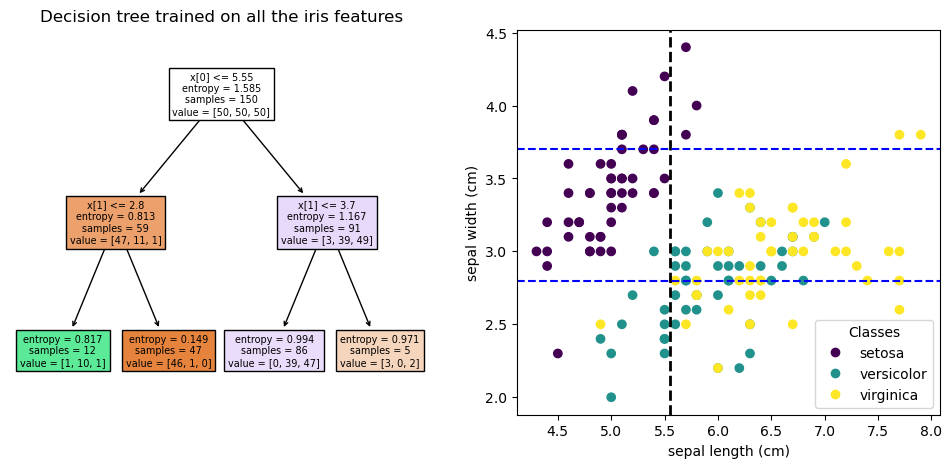

from sklearn.datasets import load_iris
from sklearn.inspection import DecisionBoundaryDisplay
from sklearn.tree import DecisionTreeClassifier
import matplotlib.pyplot as plt
iris = load_iris()
from sklearn.tree import plot_tree
fig, ax = plt.subplots(1,2,figsize=(12,5))
clf = DecisionTreeClassifier(max_depth=2, criterion='entropy').fit(iris.data[:,:2], iris.target)
plot_tree(clf, filled=True, ax=ax[0])
ax[0].set_title("Decision tree trained on all the iris features")
scatter = ax[1].scatter(iris.data[:, 0], iris.data[:, 1], c=iris.target)
ax[1].set(xlabel=iris.feature_names[0], ylabel=iris.feature_names[1])
_ = ax[1].legend(
scatter.legend_elements()[0], iris.target_names, loc="lower right", title="Classes"
)
ax[1].axvline(5.55, color='black', linestyle='dashed', linewidth=2)
ax[1].axhline(2.8, color='blue', linestyle='dashed', linewidth=1.5)
ax[1].axhline(3.7, color='blue', linestyle='dashed', linewidth=1.5)
print(clf.feature_importances_)
[0.63978588 0.36021412]

weighted_ensemble = {}
def compute_feature_importance(ml):
depth = ml.max_depth
left_group = clf.tree_.children_left
right_group = clf.tree_.children_right
n_sample = clf.tree_.weighted_n_node_samples
impurity = clf.tree_.impurity
weighted_impurity = (n_sample/150)*impurity
for node in range(len(left_group)):
if left_group[node] != -1 and right_group[node] != -1:
minitree = weighted_impurity[node] - weighted_impurity[left_group[node]] - weighted_impurity[right_group[node]]
if clf.tree_.feature[node] not in weighted_ensemble.keys():
weighted_ensemble[clf.tree_.feature[node]] = minitree
else:
weighted_ensemble[clf.tree_.feature[node]] += minitree
solution = list(map(lambda x : x/sum(weighted_ensemble.values()), weighted_ensemble.values()))
return solution
compute_feature_importance(clf)
[0.6397858774376916, 0.36021412256230856]